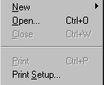

This section describes how to build menus that are not based on existing menus. To create a new menu using inheritance, see "Using inheritance to build a menu ".
You build a new menu by creating a new Menu object and then working on it in the Menu painter.
 To create a new menu:
To create a new menu:
Click the New button in the PowerBar.
On the PB Object tab page, select Menu.
Click OK.
The Menu painter opens and displays the Tree Menu view and the WYSIWYG view for defining the menu, and the General and Appearance tab pages for setting menu and toolbar properties. For information about menu and toolbar properties, see "Defining the appearance and behavior of menu items".
Because you are creating a new menu and have not added menu items yet, the only content in the Tree Menu view and the WYSIWYG view is an untitled top-level tree view item in the TreeMenu view.
 Font size of the menu bar and menu text You can change the value of the TextSize property for submenu
items, but not for the main menu bar. The main menu bar has a fixed
height that you cannot change.
Font size of the menu bar and menu text You can change the value of the TextSize property for submenu
items, but not for the main menu bar. The main menu bar has a fixed
height that you cannot change.
A menu consists of at least one menu item on the menu bar and menu items in a drop-down menu. You can add menu items in three places:
 Using the pop-up menu The procedures in this section use the Insert and Edit menus
on the PowerBuilder main menu to insert and edit menu items. You
can also use the equivalent items on the selected object's
pop-up menu.
Using the pop-up menu The procedures in this section use the Insert and Edit menus
on the PowerBuilder main menu to insert and edit menu items. You
can also use the equivalent items on the selected object's
pop-up menu.
When you add a menu item, PowerBuilder gives it a default name, which displays in the Name box in the Properties view. This is the name by which you refer to a menu item in a script.
The default name is a concatenation of the default prefix for menus, m_, and the valid PowerBuilder characters and symbols in the text you typed for the menu item. If there are no valid characters or symbols in the text you typed for the menu item, PowerBuilder creates a unique name m_n, where n is the lowest number that can be combined with the prefix to create a unique name.
 Prefix might be different The default prefix is different if it has been changed in
the Design>Options dialog box.
Prefix might be different The default prefix is different if it has been changed in
the Design>Options dialog box.
The complete menu item name (prefix and suffix) can be up to 40 characters. If the prefix and suffix exceed this size, PowerBuilder uses only the first 40 characters without displaying a warning message.
Menu items in the Tree Menu view and WYSIWYG Menu view can have the same names, but they cannot have the same name in the Properties view. If you try to add a menu item using the same name as an existing menu item, PowerBuilder displays a dialog box that suggests a unique name for the menu item. For example, you might already have an Options item on the Edit menu with the default name m_options. If you add an Options item to another menu, PowerBuilder cannot give it the name m_options.
After you add a menu item, the name that PowerBuilder assigns to the menu item is locked. Even if you later change the text that displays for the menu item, PowerBuilder does not rename the menu item. This allows you to change the text that displays in a menu without having to revise all your scripts that reference the menu item. (Remember, you reference a menu item through the name that PowerBuilder assigns to it.)
To rename a menu item after changing the text that displays for it, you can unlock the name.
 To have PowerBuilder rename a menu item:
To have PowerBuilder rename a menu item:
On the General property page in the Properties view, clear the Lock Name check box.
Change the text that displays for the menu item.
There are three choices on the Insert menu: Menu Item, Menu Item At End, and Submenu Item. Use the first two to insert menu items in the same menu as the selected item, and use Insert>Submenu Item to create a new drop-down or cascading menu for the selected item.
For example, suppose you have created a File menu on the menu bar with two menu items: Open and Exit. Here are the results of some insert operations:
The first thing you do with a new menu is add the first item to the menu bar. After doing so, you can continue adding new items to the menu bar or to the menu bar item you just created. As you work, the changes you make display in both the WYSIWYG and Tree Menu views.
The first procedure in this section describes how to add a single first item to the menu bar. Use this procedure if you want to add the menu bar item and then work on its drop-down menu. Use the second procedure to add multiple items to the menu bar quickly.
 To
insert the first menu bar item in a new menu:
To
insert the first menu bar item in a new menu:
Select the first menu item, and then select Insert>Submenu Item from the PowerBuilder menu bar.
PowerBuilder displays an empty box on the menu bar in the WYSIWYG Menu view and as a sub-item in the Tree Menu view.
Type the text you want for the menu item and press Enter.
 To
insert multiple menu bar items in a new menu:
To
insert multiple menu bar items in a new menu:
Select Insert>Submenu Item.
PowerBuilder displays an empty box on the menu bar in the WYSIWYG Menu view and as a submenu item in the Tree Menu view.
Type the text you want for the menu item and press Tab.
PowerBuilder displays a new empty box on the menu bar in the WYSIWYG Menu view and as a submenu item in the Tree Menu view.
Repeat step 2 until you have added all the menu bar items you need.
Press Enter to save the last menu bar item.
After you have created the first menu bar item, you can add more items to the menu bar or start building drop-down and cascading menus.
 To insert additional menu items on the menu bar:
To insert additional menu items on the menu bar:
Type the text you want for the menu bar item, and then press Enter.
 To add a drop-down menu to an item on the menu
bar:
To add a drop-down menu to an item on the menu
bar:
Select the item in the menu bar for which you want to create a drop-down menu.
Select Insert>Submenu Item.
PowerBuilder displays an empty box.
Type the text you want for the menu item, and then press Tab.
Repeat Step 3 until you have added all the items you want on the drop-down menu.
Press Enter to save the last drop-down menu item.
 To add a cascading menu to an item in a drop-down
menu:
To add a cascading menu to an item in a drop-down
menu:
Select the item in a drop-down menu for which you want to create a cascading menu.
Select Insert>Submenu Item.
PowerBuilder displays an empty box.
Type the text you want for the menu item, and then press Tab.
Repeat step 3 until you have added all the items you want on the cascading menu.
Press Enter to save the last cascading menu item.
 To add an item to the end of any menu:
To add an item to the end of any menu:
Select any item on the menu.
Select Insert>Menu Item At End.
PowerBuilder displays an empty box.
Type the text you want for the second menu item in the box and press Enter.
 To insert an item in any existing menu:
To insert an item in any existing menu:
Select the item that should follow the new menu item.
Select Insert>Menu Item.
An empty box displays above the item you selected.
Type the text you want for the menu item and press Enter.
You should separate groups of related menu items with lines.
 To create a line between items on a menu:
To create a line between items on a menu:
Insert a new menu item where you want the separation line to display.
Type a single dash (-) as the menu item text and press Enter.
A separation line displays.

You might save time creating new menu items if you duplicate existing menu items. A duplicate menu item has the same properties and script as the original menu item. You might be able to modify a long script slightly to make it work for your duplicate menu item.
 To duplicate a menu item or a submenu item:
To duplicate a menu item or a submenu item:
Select the menu item or the submenu item to duplicate.
Select Edit>Duplicate or press Ctrl+T.
The duplicate item displays at the same level of the menu, following the item you selected. The name of the duplicate menu item is unique.
Change the text of the duplicate menu item.
Modify the properties and script associated with the duplicate item as needed.
It is often necessary to change the text of a menu item, and if you duplicate a menu item, you need to change the text of the duplicate item.
 To change the text of a menu item:
To change the text of a menu item:
Type the new text for the menu item in the box in the WYSIWYG Menu or Tree Menu view or in the Text box in the Properties view.
You can select multiple menu items to move them, delete them, or change their common properties.
 To select multiple individual menu items:
To select multiple individual menu items:
Press Ctrl and select each item you want.
 To select a range of menu items at the same level
in the menu:
To select a range of menu items at the same level
in the menu:
Select the first item, press Shift, and select the last item.
As you work in a menu, you can move to another menu item by selecting it. You can also use the Right Arrow, Left Arrow, Up Arrow, and Down Arrow keys on the keyboard to navigate.
The easiest way to change the order of items in the menu bar or in a drop-down or cascading menu is to drag the item you want to move and drop it where you want it to be. You can drag items at the same level in a menu structure or to another level. For example, you can drag an item in the menu bar to a drop-down menu or an item in a cascading menu to the menu bar.
 WYSIWYG Menu and Tree Menu views You can use drag and drop within each view. You can also drag
from one view and drop in another.
WYSIWYG Menu and Tree Menu views You can use drag and drop within each view. You can also drag
from one view and drop in another.
 To move a menu item or submenu item using drag
and drop:
To move a menu item or submenu item using drag
and drop:
Select the item.
Press and hold the left mouse button and drag the item to a new location.
A feedback line appears at the new location to indicate where to drop the item.
Release the mouse button to drop the menu item.
The menu item displays in the new location.
 Dragging to copy To copy a menu item by dragging it, press and hold the Ctrl
key while you drag and drop the item. A copied menu item has the
same properties and scripts as the original menu item.
Dragging to copy To copy a menu item by dragging it, press and hold the Ctrl
key while you drag and drop the item. A copied menu item has the
same properties and scripts as the original menu item.
 To delete a menu item:
To delete a menu item:
Select the menu item you want to delete.
Click the Delete button in the PainterBar or select Edit>Delete from the menu bar.
You can save the menu you are working on at any time. When you save a menu, PowerBuilder saves the compiled menu items and scripts in the library you specify.
 To save a menu:
To save a menu:
Select File>Save from the menu bar.
If you have previously saved the menu, PowerBuilder saves the new version in the same library and returns you to the Menu painter. If you have not previously saved the menu, PowerBuilder displays the Save Menu dialog box.
Name the menu in the Menus box (see "Naming the menu").
Write comments to describe the menu.
These comments display in the Select Menu dialog box and in the Library painter. It is a good idea to use comments so you and others can easily remember the purpose of the menu later.
Specify the library in which to save the menu and click OK.
The menu name can be any valid PowerBuilder identifier of up to 40 characters. For information about PowerBuilder identifiers, see the PowerScript Reference .
A common convention is to use m_ as a standard prefix, and a suffix that helps you identify the particular menu. For example, you might name a menu used in a sales application m_sales.